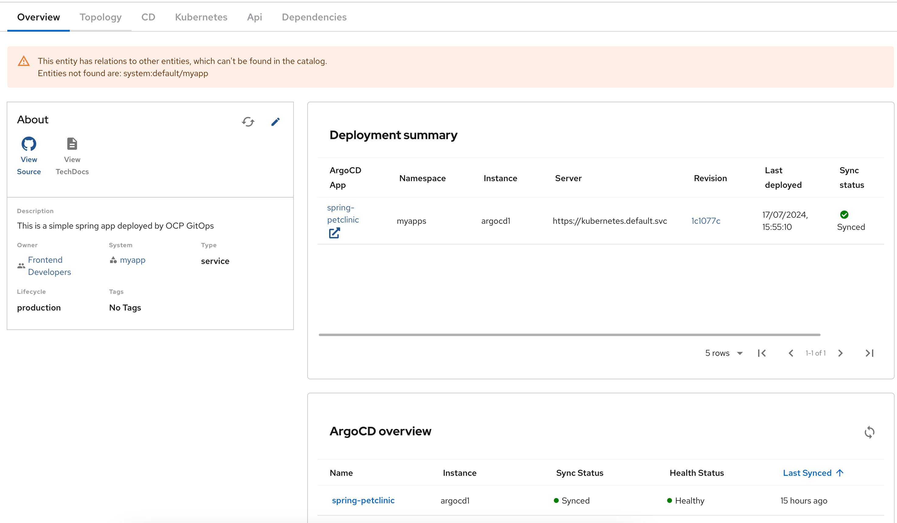
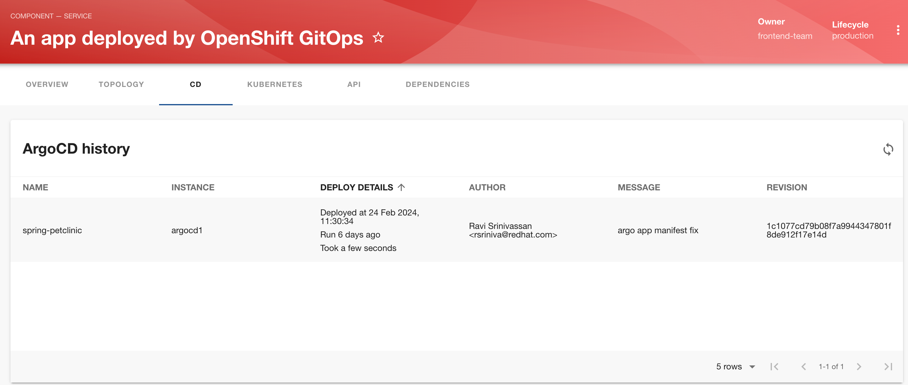

ArgoCD Plugin
The RHDH ArgoCD plugin provides a read-only visualization of your ArgoCD and OpenShift GitOps application deployments in the RHDH web UI. This allows developers to get quick feedback about their application deployment status without ever leaving the RHDH web UI. The plugin displays the latest deployment status, as well as information about historical deployments. Developers can easily identify deployments that failed and take quick, remedial action.
When importing ArgoCD Application resources into RHDH, you must ensure that you have a argocd/app-name annotation in your catalog YAML descriptor files that match the name of the ArgoCD Application resource.
Lab: Configuring the Tekton Plugin
Pre-requisites
-
Install the
Red Hat OpenShift GitOpsoperator by following the official product documentation at https://access.redhat.com/documentation/en-us/red_hat_openshift_gitops/1.11/html-single/installing_gitops/index#installing-gitops-operator-in-web-console_installing-openshift-gitops. Use default values outlined in the installation guide. You must have an ArgoCD instance running in theopenshift-gitopsnamespace before continuing with the next steps.
Steps
-
Log in to the OpenShift cluster as the cluster administrator using the
ocCLI. -
Download and inspect the sample ArgoCD application at https://github.com/RedHatQuickCourses/devhub-qc-apps/blob/main/gitops/argo-app.yaml. You can use your own custom application if you wish. Just ensure that the annotation’s in your catalog YAML file match the application name.
-
Create the application in the
openshift-gitopsnamespace.$ oc apply -f argo-app.yaml -n openshift-gitops
-
Get the auto-generated password for the ArgoCD instance created by the OpenShift GitOps operator:
$ oc extract secret/openshift-gitops-cluster -n openshift-gitops --to=-
-
Edit the
rhdh-secretsSecret resource in thedevhubnamespace and add key/value for accessing the ArgoCD instance:ARGOCD_ADMIN_USER=admin ARGCOD_ADMIN_PASSWORD=<password from the previous step>
-
Edit the
app-config-rhdhConfigMap and configure the ArgoCD plugin:argocd: waitCycles: 25 appLocatorMethods: - type: 'config' instances: - name: argocd1 (1) url: https://openshift-gitops-server-openshift-gitops.apps.cluster-6tkk4.dynamic.redhatworkshops.io (2) username: ${ARGOCD_ADMIN_USER} (3) password: ${ARGCOD_ADMIN_PASSWORD} (4)1 A unique name for this ArgoCD instance. You can define multiple ArgoCD instances under the instances:key2 The URL of the ArgoCD instance (Run oc get route openshift-gitops-server -n openshift-gitopsto the full route URL)3 Username for this ArgoCD instance. Default is admin4 Password for this ArgoCD instance. -
Upgrade the RHDH helm chart in YAML mode and enable the ArgoCD plugins:
- disabled: false package: ./dynamic-plugins/dist/roadiehq-backstage-plugin-argo-cd - disabled: false package: ./dynamic-plugins/dist/roadiehq-backstage-plugin-argo-cd-backend-dynamic -
Click
Upgradeto re-deploy the chart and for the new configuration to take effect. Wait until the RHDH container is fully up and running. -
Finally, inspect the catalog YAML descriptor file for this component at https://github.com/RedHatQuickCourses/devhub-qc-apps/blob/main/gitops/catalog-info.yaml. Adjust the values for your environment. Note the
argocd/app-nameannotation to match the name of theApplicationresource (spring-petclinic).apiVersion: backstage.io/v1alpha1 kind: Component metadata: name: spring-petclinic-gitops title: An app deployed by OpenShift GitOps description: | This is a simple spring app deployed by OCP GitOps annotations: backstage.io/kubernetes-id: 'spring-petclinic' backstage.io/kubernetes-namespace: myapps backstage.io/kubernetes-label-selector: 'app=spring-petclinic' argocd/app-name: 'spring-petclinic' spec: ... -
Import the component into the RHDH catalog from the
Create > REGISTER EXISTING COMPONENTpage, and provide the full path to thecatalog-info.ymlfile from the previous step. After the component is imported, verify that the component is listed in theCatalogpage and click onAn app deployed by OpenShift GitOpsto view the component details. -
Verify that you can see a new
ArgoCD overviewsection in theOVERVIEWtab that shows the sync status and health status for this application.Figure 1. ArgoCD Status Overview -
You should see a new tab named
CDin this page. Click on it to view the historical information for the application.Figure 2. ArgoCD History